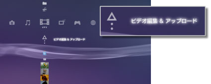
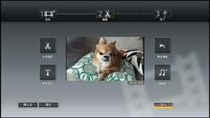

ビデオ > 動画ファイルを編集する
動画ファイルを編集する
本体ストレージに保存した動画ファイルを編集できます。
1. |
|
|---|---|
|
 |
|
2. |
|
3. |
|
4. |
動画ファイルを編集する。 |
|
 |
|
5. |
［完了］を選ぶ。 |
 （ビデオ）＞
（ビデオ）＞ （新しいビデオの作成）を選ぶ。
（新しいビデオの作成）を選ぶ。 （編集）では、特定のシーンを消去したりテキスト（文字）を挿入できます。画面の指示に従って操作してください。
（編集）では、特定のシーンを消去したりテキスト（文字）を挿入できます。画面の指示に従って操作してください。 を選ぶと、編集した動画ファイルのプレビューができます。
を選ぶと、編集した動画ファイルのプレビューができます。ヒント
- 手順3 で繰り返し
 （追加）を選びファイルを追加すると、複数の動画ファイルをつなぐことができます。
（追加）を選びファイルを追加すると、複数の動画ファイルをつなぐことができます。 - 編集した動画ファイルの再生時間は最長1 時間です。
- テキストは、1 画面に16 個、編集後の１ファイルに200 個まで挿入できます。
- BGMは、プリセットされている曲から選べます。本体ストレージに保存された音楽ファイルなどは選べません。
編集できるファイルの種類
 （ビデオ編集＆アップロード）では、次の種類のファイルを編集できます。
（ビデオ編集＆アップロード）では、次の種類のファイルを編集できます。
- システムソフトウェアのバージョン3.40 以上で記録メディアやUSB マスストレージ機器から本体ストレージに保存された動画ファイル
- システムソフトウェアのバージョン3.40 以上で
 （インターネットブラウザー）から本体ストレージにダウンロードされた動画ファイル
（インターネットブラウザー）から本体ストレージにダウンロードされた動画ファイル
ヒント
- システムソフトウェアを3.40 にアップデートする前に本体ストレージに保存された動画、著作権保護されたファイルや視聴年齢制限が設定されているコンテンツは編集できません。
- 他者の知的財産権を侵害しないように注意してください。